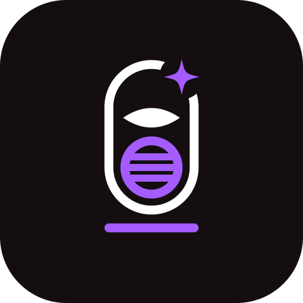
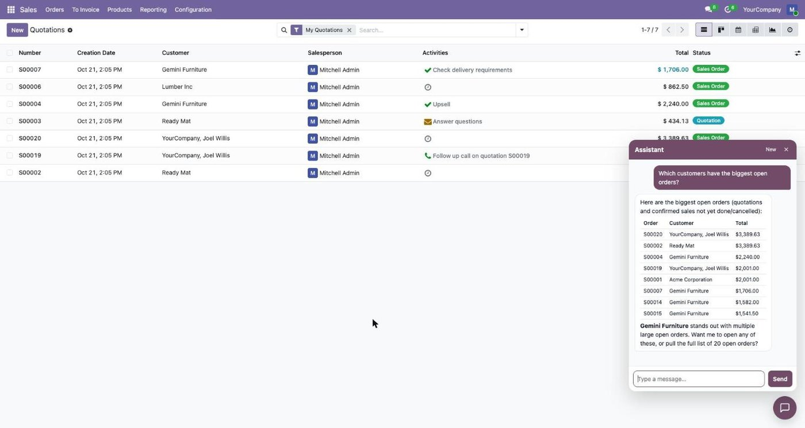
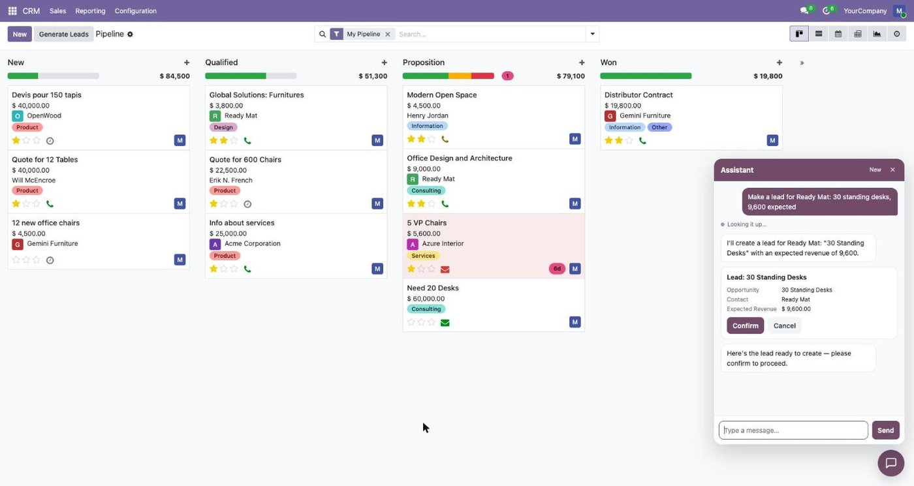
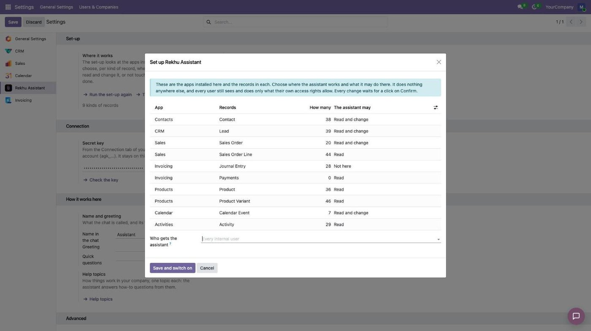

An AI assistant in the Odoo back office for the people who work in it. They ask in their own words; it finds the records, answers, and does the work, with each user's own access rights and only after a click on Confirm.
Odoo 17, 18, 19 and 20 · on your own server or Odoo.sh, not on Odoo Online
"Which customers have the biggest open orders?" The answer comes beside the screen you are on: a short list or a table, amounts in your currency, each record with a button to open it.

"Make a lead for Ready Mat: 30 standing desks, 9,600 expected." The assistant shows exactly what it will create or change, in the user's language, and does it only after a click on Confirm.

After install, the set-up lists the apps installed here and the records in each, with how many there are. Per kind of record you choose: not here, read, or read and change. The assistant does not run until this is done, and you can change it any time.
Choose which group of users gets the chat, give it a name, a greeting, quick questions and your own rules.

Developers add actions of their own with one decorator, @tool, on any model method: the assistant offers them with the same confirmation and access rights.
The assistant runs on prepaid credit in your Rekhu account, and a new account starts with $10 of it: no subscription and no fee per user. The credit left shows in the settings, and usage per company and per month in your account.
The secret key stays on your Odoo server. Records outside the set-up are never read; changes are made inside a savepoint and only after Confirm.